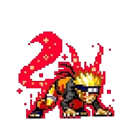

3 - Como Naruto descobre quem é o seu pai?
A - Jiraya conta à ele
B - Tsunade deixa escapar em uma conversa
C - No meio de uma transformação quase completa da Kyuubi
D - Orochimaru conta à ele no meio de uma luta